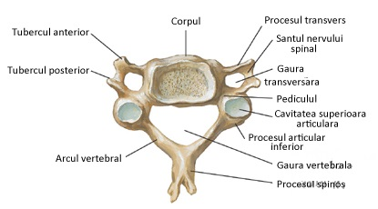

Coloana vertebrală reprezintă scheletul axial, compusă din 33-34 de vertebre și este situată în partea mediană și posterioară a corpului.
Coloana vertebrală cuprinde cinci regiuni:
• Cervicală – formată din 7 vertebre;
• Toracală – formată din 12 vertebre;
• Lombară – formată din 5 vertebre;
• Sacrală – formată din 5 vertebre care se sudează și alcătuiesc osul sacru;
• Coccigiană – formată din 4-5 vertebre care se sudează și alcătuiesc osul coccis.
Coloana vertebrală prezintă curburi în plan sagital și frontal. În plan sagital:
o Lordoze – au concavitatea posterior (regiunile cervicală și lombară);
o Cifoze – concavitatea privește anterior (regiunile toracală și sacrală).
În plan frontal sunt numite scolioze și pot avea convexitatea la stânga sau la dreapta.
Vertebra-tip prezintă următoarele componente:
• Corpul vertebral – situat anterior;
• Arcul vertebral – posterior, este legat de corpul vertebral prin doi pediculi vertebrali care prin suprapunere delimitează orificiile intervertebrale prin care ies nervii spinali;
• Orificiul vertebral – formează prin suprapunere canalul vertebral (rahidian) ce adăpostește măduva spinării.

Rolul coloanei vertebrale:
ax de susținere a corpului;
protejarea măduvei spinării;
executarea diferitelor mișcări ale trunchiului și capului.
Sternul
Sternul este un os lat, situat anterior, pe linia mediană a toracelui. Este format din manubriu, corp, apendice xifoid (rămâne cartilaginos până în jurul vârstei e 40 de ani).
Coastele
Coastele sunt arcuri osteocartilaginoase, situate în partea laterală a toracelui. Sunt 12 perechi:
o Coaste adevărate – primele 7 perechi, se articulează direct cu sternul;
o Coaste false – perechile VIII, IX, X; se articulează prin intermediul cartilajului coastei VII;
o Coaste flotante/ libere – ultimele două perechi; nu se articulează la stern.
|